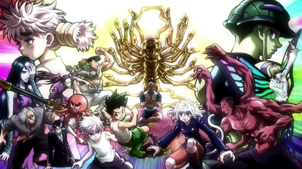

Uma historia de aventura onde Gon e seus amigos estão a procura de se tornarem hunters profissionais e para isso
eles estarão se metendo em varias aventuras!!
Gon, Killua, Kurapika e Leolio juntos em uma jornada de desafios!
Vem você também junto com a gente

Neste anime existem arcos que vao desde exame hunter ate a busca do killua na casa de sesus pais onde eles sao assasinos proffisionais, a torre celestial onde aprendem o nem, saga York shin, chimera ants, eleiçoes